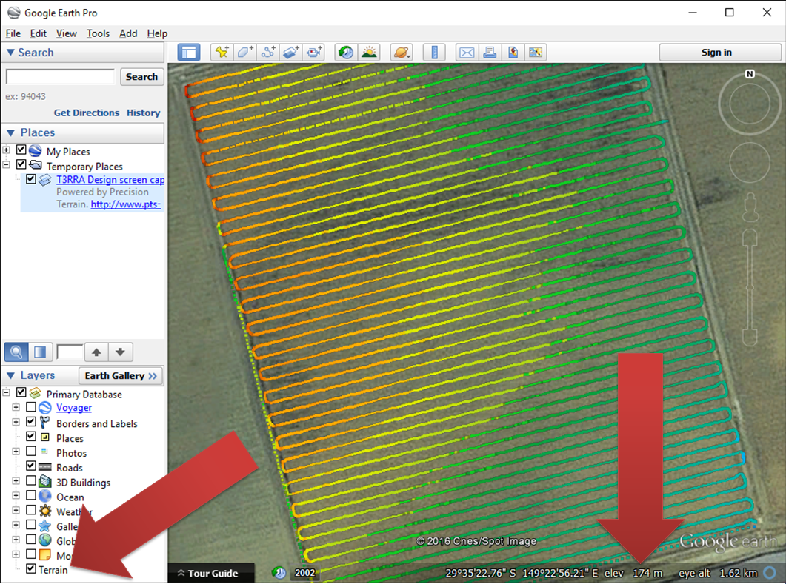

Using Google Earth (GE) to preview your import data in always a good idea. By checking the elevation GE shows against the range of elevation values T3D is showing you can check to see your import units are correct. For instance, if you have told T3D that your data is in feet but GE is showing elevation values for the field that roughly 3 times greater than what T3D is showing then it is probable that your data was actually in meters.
Google earth preview will show
- Whether or not your import units are correct
- Whether or not your UTM Zone & Hemisphere is correct
- Whether or not the field you are importing is the one you are expecting
- Whether or not part of the data is missing
Screenshot
